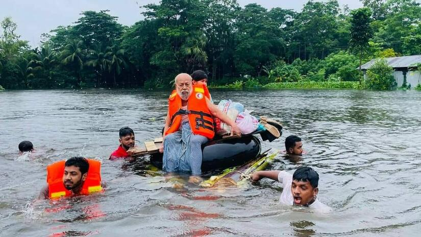
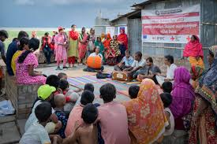
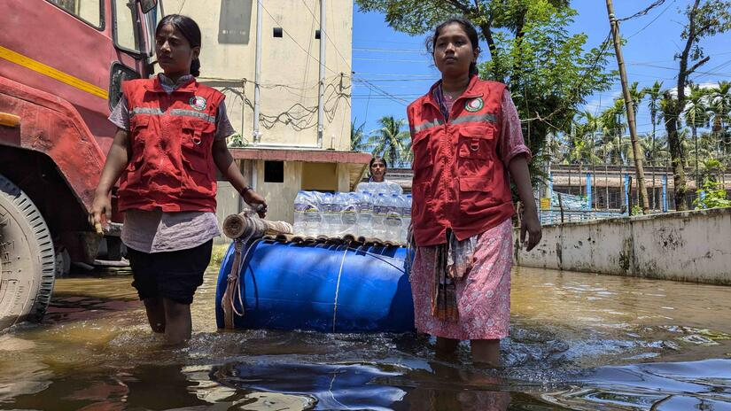

ResQ:
Chaos To Control
Chaos To Control
In the face of disasters, ResQ transforms chaos into control through strategic planning, rapid deployment, and coordinated response efforts. Our approach is built on decades of experience responding to natural disasters in Bangladesh and beyond.
By implementing systematic protocols and utilizing local knowledge, we've developed effective methodologies to bring order to the most challenging disaster situations, ensuring communities receive timely and efficient assistance when they need it most.
Our team works tirelessly to establish command centers, coordinate with local authorities, and deploy resources where they'll have the greatest impact, turning the uncertainty of disaster into a structured path toward recovery and resilience.
This guiding principle drives everything we do at ResQ. We believe that effective disaster management goes beyond addressing immediate physical needs—it requires restoring a sense of hope and providing the foundation for communities to rebuild stronger than before.
Our motto reminds us that behind every disaster statistic are real people with real lives that have been disrupted. By focusing on both the immediate emergency response and the long-term recovery process, we help communities transition from survival to revival.
We carry this mission into every disaster zone, ensuring that our work not only addresses immediate critical needs but also lays the groundwork for a more resilient and hopeful future.
ResQ's disaster management approach encompasses four interconnected phases: preparedness, response, recovery, and mitigation. Our work in Bangladesh has been particularly impactful, where we've responded to cyclones, floods, and landslides that frequently affect coastal and low-lying areas.
We conduct regular training for local communities on early warning systems, evacuation procedures, and basic first aid. During disasters, our emergency response teams provide immediate medical assistance, temporary shelter, clean water, and food supplies.
Our long-term recovery programs help rebuild infrastructure, restore livelihoods, and strengthen community resilience. We also work on disaster risk reduction projects like constructing flood-resistant housing, developing sustainable water management systems, and establishing community-based disaster management committees.

Reduction in response time since 2018
Our strategic positioning of relief supplies and trained personnel throughout Bangladesh has dramatically reduced emergency response times, allowing us to reach affected communities within hours rather than days.
Communities with disaster preparedness training
Through comprehensive training programs, we've empowered local communities to implement their own disaster preparedness and initial response systems, significantly increasing survival rates and reducing property damage.


Recovery achievements in past 5 years
Our comprehensive recovery programs have helped rebuild thousands of homes, restore critical infrastructure, and revitalize local economies, with a particular focus on creating more resilient communities that can better withstand future disasters.